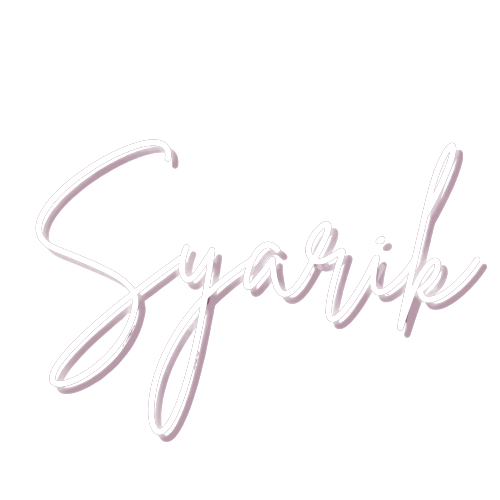

<nav class="navbar navbar-expand-lg" style="background-color: #EFFFFD;">
  <div class="container-fluid">
    <a class="navbar-brand" href="#">
      
    </a>
    <button class="navbar-toggler" type="button" data-bs-toggle="collapse" data-bs-target="#navbarSupportedContent" aria-controls="navbarSupportedContent" aria-expanded="false" aria-label="Toggle navigation">
      <span class="navbar-toggler-icon"></span>
    </button>
    <div class="collapse navbar-collapse" id="navbarSupportedContent">
      <ul class="navbar-nav me-auto mb-2 mb-lg-0 justify-content-center">
        <li class="nav-item">
          <a class="nav-link" href="#">Home</a>
        </li>
        <li class="nav-item">
          <a class="nav-link" href="#">Posts</a>
        </li>
        <li class="nav-item">
          <a class="nav-link" href="#">About</a>
        </li>
      </ul>
      <form class="d-flex" role="search">
        <button class="btn btn-outline" type="submit" style="margin-right: 10px;">Register</button>
        <button class="btn btn-outline" type="submit">Login</button>
      </form>
    </div>
  </div>
</nav>
